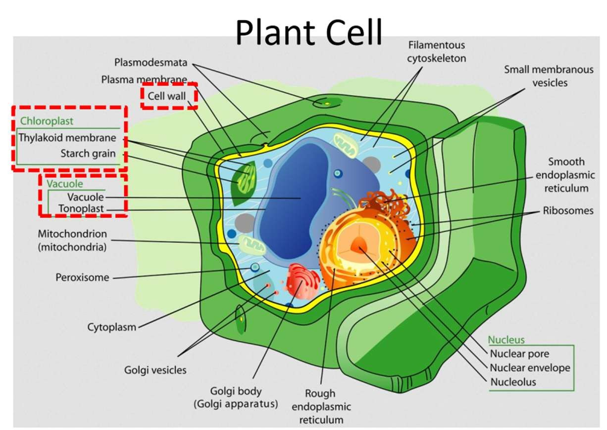
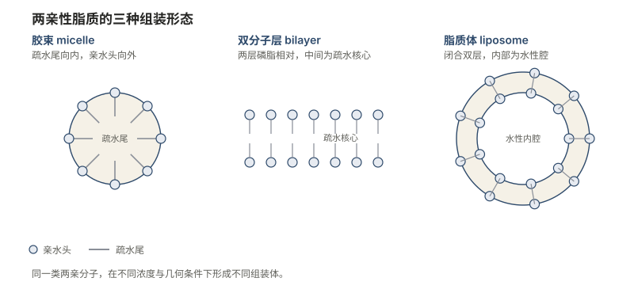

BIO103 · 第 1 章
细胞的基本属性与原核/真核细胞
Basic Properties of the Cell; Prokaryotes & Eukaryotes
虚线下划线为术语；悬停查看中文、英文与释义，完整词典见“术语”。
本章目录
本章从细胞学说的建立出发，比较原核细胞与真核细胞在遗传区室、核糖体、膜系统、细胞骨架与增殖方式上的差异，再依次认识真核细胞的膜性细胞器、细胞骨架与细胞外结构。
本章要点
- 细胞是生命的基本单位：所有生物由一个或多个细胞组成，细胞来自已有细胞。
- 原核细胞没有膜包围的细胞核，遗传物质位于拟核；真核细胞有核被膜与多种膜性细胞器。
- 细菌核糖体为 70S（30S + 50S），真核细胞质核糖体为 80S（40S + 60S）。
- 细胞器是由膜界定和包围的区室，形态随功能而异，是高度动态的结构。
- 两亲性脂质在水中自发形成双分子层、脂质体或微团，膜内分子可侧向扩散与翻转。
- 细胞核、核仁、核孔、内质网、高尔基体、溶酶体、线粒体、质体与液泡各有专一功能。
- 细胞骨架由微丝、微管与中间丝组成，维持形态并参与运动；细胞壁与细胞外基质提供外部支撑。
1.1 细胞学说与细胞的基本属性
Robert Hooke 于 1665 年观察软木薄片，首次描述并命名了“cell”（细胞）；Antonie van Leeuwenhoek 于 1674 年首次描述活细胞。讲义由此给出几条基本判断：细胞cell是生命的 building blocks（构成单位），但“单位”不等于“简单”；所有生物都由一个或多个细胞组成；细胞来自其他细胞（cells originate from other cells）；细胞非常小。
讲义同时给出三域的系统发生关系：Bacteria（细菌）、Archaea（古菌）与 真核域Eukarya，并在系统发生树上标注 3.9 billion years ago 与 2.7 billion years ago 两个年代标记，用于说明细胞谱系在数十亿年尺度上的分化。细胞的尺度可借助在线工具 Cell Size and Scale 直观比较。
讲义强调“单细胞不等于简单”。
L1–2 p.1–3
1.2 原核与真核：遗传区室与基因组组织
原核细胞与真核细胞最根本的差别在遗传物质的存放方式。真核细胞有由膜包围的细胞核nucleus；原核细胞没有膜包围的核，DNA 集中在拟核nucleoid区域。由此派生出一系列差别：
- 细胞器：真核细胞有若干膜包围的细胞器；原核细胞没有膜包围的细胞器。
- 染色体：真核细胞通常不止一条染色体；原核细胞主要只有一条，少数细菌有两条（如 Vibrio species）。
- 组蛋白：真核 DNA 缠绕组蛋白形成核小体；细菌没有组蛋白，古菌有组蛋白用于包装染色体 DNA。
- 转录与翻译：真核细胞在核内转录、在细胞质翻译，两者被核被膜分隔；原核细胞在细胞质中同时进行，即偶联（coupled）。
- 倍性：真核以二倍体基因组为主，许多植物还有更高倍性；原核为单倍体基因组，快速分裂的细胞可含多个染色体拷贝。
在基因组结构上，真核细胞常有大量非编码与重复序列，基因可含 spliceosomal introns；原核基因组紧凑、重复序列极少，蛋白编码基因中没有剪接体内含子，只有 tRNA/rRNA 中罕见的自剪接内含子。质粒方面，真核细胞少见（如酵母 2-μm plasmid），原核细胞普遍具有染色体外的质粒 DNA。DNA 复制起点上，真核有多个复制起点，多数细菌只有一个，部分古菌有多个。

L1–2 p.4
1.3 原核与真核：核糖体、膜与细胞壁
核糖体按沉降系数区分：真核细胞质核糖体ribosome为 80S，由 40S 小亚基与 60S 大亚基组成，沉降较快；原核核糖体为 70S，由 30S 与 50S 组成，沉降较慢。rRNA 大小相应不同：真核细胞质与核内较大的 rRNA 为 28S、18S、5.8S、5S，线粒体与叶绿体中的核糖体则属 70S 型、rRNA 较小；原核 rRNA 为 23S、16S、5S。
膜与壁的差别同样明显。真核质膜plasma membrane有受体、含固醇与碳水化合物；原核质膜有膜蛋白与受体，但一般不含固醇。真核细胞壁化学组成复杂：植物为纤维素，真菌为几丁质，动物细胞无壁；原核细胞壁化学组成简单，为肽聚糖（所有具壁细菌；mycoplasma 与古菌无），部分原核细胞还有荚膜或糖被（capsule / glycocalyx）。液泡方面，真核细胞可有液泡（植物中央大液泡尤为显著），原核一般没有真正的膜包围液泡，蓝细菌的气囊（gas vacuole）是例外。
微管方面，真核细胞普遍有丰富的微管；原核细胞没有真正的微管，分裂时使用与 tubulin 同源的 FtsZ 蛋白形成分裂环。
L1–2 p.5
1.4 原核与真核：细胞骨架、代谢与增殖
真核细胞有由 actin、微管与中间丝构成的复杂细胞骨架cytoskeleton，并有胞质环流（cytoplasmic streaming）；原核细胞只有简单的原核骨架（FtsZ、MreB、crescentin），没有真核型的 actin-微管骨架，也没有真正的胞质环流。真核细胞可有溶酶体与过氧化物酶体，原核两者皆无；原核可有提供浮力的气囊，真核没有。
代谢与生活史方面：真核多为需氧或兼性厌氧，也存在专性厌氧种；原核氧需求多样（需氧、兼性厌氧、严格厌氧），部分种类能固氮，真核不能。细胞大小上，真核通常 10–150 μm，某些单细胞真核可小于 10 μm；原核通常 0.5–5 μm，罕见的巨型细菌可达数百 μm。细胞周期上，真核体细胞常为 12–24 h 且随物种与细胞类型变化很大；原核可短至 20–60 min，慢生长菌株周期长得多，并可进行多叉复制（multifork replication）。
增殖方式：真核常见有丝分裂的无性繁殖，有性繁殖使用减数分裂加有丝分裂；原核主要进行二分裂（binary fission），并通过接合（conjugation）、转化（transformation）与转导（transduction）实现水平基因转移。
L1–2 p.6
1.5 细胞的大小、形态与单细胞真核生物
真核细胞形态极其多样：神经元有长轴突与树突分支，红细胞呈双凹圆盘状以利于气体交换，精子有鞭毛与顶体。形态与功能直接相关——讲义以肝脏为例：健康肝、脂肪肝与肝硬化肝的组织形态依次改变，说明观察细胞与组织形状具有诊断意义。大肠杆菌的横切面则用于说明原核细胞的尺度：在光学显微镜下只是一个短杆，内部结构需靠更高分辨率手段才能分辨。
单细胞真核生物中，原生动物protozoa是动物样的单细胞生物，靠鞭毛等结构运动。讲义列举三类致病原虫：Giardia lamblia 引起肠道感染，表现为腹痛、腹胀、恶心与水样腹泻，病原经污染水源传播；Entamoeba histolytica 引起阿米巴病，经粪口途径传播，可无症状或出现腹泻、恶心与体重下降；Plasmodium 引起疟疾，轻症为发热、寒战与头痛，重症可出现意识混乱、抽搐与呼吸困难，幼儿、孕妇与免疫缺陷者风险更高。
多细胞生物的组织层次为：细胞 → 组织（tissue）→ 器官（organ）→ 器官系统（organ system）。生物多样性源于细胞属性的差异，而细胞本身是高度复杂且有序的结构。
L1–2 p.7–12
1.6 真核细胞细胞器总览
典型真核细胞可辨识 14 种结构：核仁、细胞核、核糖体、囊泡、粗面内质网、高尔基体、细胞骨架、光面内质网、线粒体、液泡、细胞质基质、溶酶体、中心体与细胞膜。
细胞器organelle的定义是：由膜界定并包围的细胞区室。它们具有三个特点：高度动态，会移动并改变形状；界定专门的功能，使特定过程被限制在特定细胞器中；形态与功能匹配——球形（细胞核、溶酶体）、囊状（粗面内质网、高尔基体）、管状（光面内质网）、圆柱或“香肠状”（线粒体）。
所有细胞的结构组织方式大致相同，但会随功能改变：肌肉细胞、神经元与血细胞各不相同。

L1–2 p.15–16
1.7 膜的组装：两亲性脂质、脂质体与微团
膜脂是两亲性amphiphilic分子：同一分子既有疏水（非极性）区域，又有亲水（极性）区域。磷脂由磷酸基团（phosphate group）与脂质链（lipid chain）构成。在水溶液中，这类分子自发聚集，形成两种几何形态：单尾两亲分子偏好形成大小与几何形状不同的微团micelle；双尾磷脂则形成双分子层，进而可闭合成脂质体liposome——由一个或多个脂质双分子层构成的中空球形囊泡，脂质可带电或中性、可相同或不同。
维持双分子层的力是范德华吸引，讲义称之为疏水键（hydrophobic bond）。分子在膜内的运动分两类：侧向扩散lateral diffusion是沿同一侧膜面滑动，速度快；翻转transverse diffusion / flip-flop是跨越到膜的另一侧，速度慢。这一快一慢的对比是理解膜不对称性的基础。

绘图提示词
Clean vector diagram in three panels: a single-tailed amphiphile drawn as a head with one tail, assembling into a spherical micelle; a double-tailed phospholipid drawn with phosphate head and two acyl chains, assembling into a flat bilayer; the same bilayer closing into a hollow spherical liposome with an aqueous core. Flat 2D, thin 1.5 px strokes, muted slate blue and warm grey palette, white background, English labels, no cartoon, no gradient, no shadow.
L1–2 p.17–18
1.8 膜的组成、流动性与透过性
膜的组成包括磷脂双分子层phospholipid bilayer、蛋白质、糖类与胆固醇cholesterol，具体比例高度依赖细胞器与细胞类型。膜的特征可归纳为一组关键词：流体且动态的结构；分子既能扩散也能翻转；具有平面性（planarity）；具有弯曲能力（bending capacity）；对大多数离子不通透，构成内外的屏障；具有极性（polarized），即两侧组成与功能不同。
质膜是细胞的“外壳”，细胞器也都由膜包围。膜支持酶促反应，因为膜可以把酶与底物浓缩在二维表面上。讲义特别指出：膜不决定细胞的形状，决定形状的是细胞骨架。
膜组成异质（heterogeneous），不同区域脂质与蛋白比例不同。细胞融合实验（fusion of cells）显示，融合后的质膜双分子层核心仍保持流体性质，来自两种细胞的膜组分可以相互混合，这是膜流动性的直接证据。
L1–2 p.19–20
1.9 细胞核、染色质与核孔
细胞核由双层核被膜nuclear envelope包围，两层膜之间形成核周间隙（perinuclear space），核被膜把核内 DNA 与细胞质隔开并起保护作用。核内含有细胞的大部分遗传物质。DNA 与组蛋白结合形成染色质chromatin，染色质有三种状态：异染色质heterochromatin紧密包装；常染色质euchromatin松散，是 DNA 转录为 mRNA 的场所；染色体chromosome是 DNA 浓缩的最高形式，在细胞分裂时出现。
染色质状态的调控因素成对出现：DNA 甲基化、组蛋白甲基化（如 H3K9me3）、组蛋白去乙酰化与辅阻遏复合物（corepressor complexes）推动异染色质；组蛋白甲基化（如 H3K4me3）、组蛋白乙酰化、连接组蛋白 H1 减少与辅激活复合物（coactivator complexes）推动常染色质。
核仁nucleolus是核内分化的亚区，是 rRNA 转录的场所，也是细胞中最大的细胞器（5–20 μm）。
核被膜上的核孔nuclear pore控制分子进出：小分子可自由扩散，大分子蛋白需要信号肽（signal peptide）才能通过。核孔是环状蛋白复合物，即核被膜中蛋白衬里的通道，负责 mRNA、tRNA 与蛋白质的输入输出。
Clean vector cross-section of a eukaryotic nucleus: double nuclear envelope with perinuclear space, ring-shaped nuclear pores spanning both membranes, nucleolus as a dense body inside the nucleoplasm, chromatin fibres shown as loose and dense regions, and a nuclear pore channel with small molecules diffusing and a large protein complex carrying a signal peptide. Flat 2D, thin strokes, muted slate blue and warm grey, white background, English labels, no cartoon, no gradient, no shadow.
L1–2 p.21–22
1.10 核糖体与内质网
核糖体是翻译的场所，把氨基酸按 mRNA 密码子（codon）顺序连接成多肽链，由小亚基与大亚基组成。在真核细胞中，核糖体分布于三处：游离于细胞质、附着于内质网、以及线粒体与叶绿体内部。真核 80S 核糖体的大亚基为 60S。
内质网endoplasmic reticulum分为两类。粗面内质网rough ER由堆叠并相互连通的膜性囊（cisternae）构成，从核外膜延伸而来，表面附着核糖体，是活跃的蛋白质合成场所。光面内质网smooth ER没有核糖体，外观更呈管状；它制造并包装分子送往高尔基体，合成脂质与部分类固醇激素，在某些细胞中还代谢附着于其外侧的糖类。肝细胞含大量光面内质网，因为肝脏承担解毒功能。
信号肽决定蛋白质去向：分泌、留在 ER、进入细胞核（如组蛋白）或成为膜蛋白。
L1–2 p.23–24
1.11 高尔基体与溶酶体
高尔基体Golgi apparatus是由扁平膜囊（saccules）层层堆叠而成的特化膜系统。目的地为高尔基体、溶酶体、需翻译后修饰或细胞外液的蛋白质，在内质网出口位点（ER exit sites）被包装成囊泡vesicle；囊泡融合形成囊泡-管状簇（vesicular tubular cluster），再转运至高尔基体。高尔基体分三个功能区：cis 面接收来自粗面与光面内质网的囊泡；medial 区进行糖基化与翻译后修饰；trans 面释放分泌囊泡，指向质膜与溶酶体。囊泡在 cis 与 trans 之间的移动是双向的。
高尔基体参与蛋白质的分选与翻译后修饰，修饰类型包括糖基化、硫酸化（在酪氨酸的 OH 上加硫酸基）、磷酸化与脂质转运。它修饰寡糖链，使其成为复杂寡糖；有些蛋白需要额外的寡糖才能具备特定功能。高尔基体通过 O-糖基化修饰蛋白。
溶酶体lysosome起源于高尔基体，含多达 40 种糖基化的水解酶（核酸酶、蛋白酶、糖苷酶、脂肪酶、磷酸酶等），把大分子水解为单体，是细胞的“消化系统”。未参与功能的为初级溶酶体primary lysosome；已与其他囊泡融合并正在降解内容物的为次级溶酶体secondary lysosome。食物分子经吞噬作用（phagocytosis）进入细胞形成吞噬体phagosome，与初级溶酶体融合成次级溶酶体；溶酶体也消化细胞自身物质，即自噬autophagy。被吞入的微生物封闭于吞噬体中，吞噬体成熟后与溶酶体融合为吞噬溶酶体phagolysosome，抗原在此降解并可呈递给 T 细胞（例：Mycobacterium tuberculosis）。
L1–2 p.25–27
1.12 线粒体、质体、液泡与细胞外结构
线粒体mitochondrion典型大小 0.75–3 μm，具双层膜。外膜光滑，富含孔蛋白porin，允许小分子扩散；内膜极不通透，明显折叠成嵴cristae；内膜折叠之间为膜间隙，内膜内部的腔为线粒体基质mitochondrial matrix。线粒体被认为由内共生细菌演化而来，拥有自己的质粒或环状线粒体 DNA。内共生endosymbiosis指一种单细胞生物居住在另一细胞内部、形成互利关系。线粒体把燃料分子能量转变为 ATP 的高能磷酸键：糖酵解净得 2 ATP，三羧酸循环净得 2 ATP，氧化磷酸化净得约 32（现代估计 26–28）ATP。
叶绿体chloroplast是光合作用场所，把光能转变为化学键能，具双层膜与类囊体（thylakoid）囊；基粒granum是类囊体堆叠而成，基质stroma是悬浮基粒的液体，含 DNA 与核糖体。
液泡vacuole（植物与原生生物）储存废物与有毒化合物，可防食草动物取食；为植物细胞提供结构支撑，即膨压turgor；储存花与果实中的花青素（anthocyanins，粉蓝色素）；许多原生生物有由吞噬作用形成的食物泡。
细胞壁cell wall：植物细胞壁由纤维素纤维（β(1-4)D-glucose）嵌入其他复杂多糖与蛋白质构成，提供刚性。细胞外基质extracellular matrix包围许多动物细胞，由胶原等纤维蛋白、凝胶状蛋白聚糖（proteoglycans）与其他蛋白组成，把细胞黏合成组织，决定骨、软骨与皮肤的性质，并在发育与组织修复中引导细胞迁移。
微丝microfilament由 actin 组成：G-actin 为单体，F-actin 为纤维，具极性且动态，可形成刚性内骨架，也作为马达蛋白运动的轨道。微管microtubule由 α/β-tubulin 异二聚体构成，有正端与负端，可通过增减二聚体快速改变长度，参与纺锤体形成；中心粒（centriole）与基体（basal body）结构相同。tau 假说说明微管与疾病的关系：阿尔茨海默病中 tau 过度磷酸化，彼此配对形成神经纤维缠结，导致脑细胞微管解体。神经元数量约 1000 亿，突触约 1000 万亿；胶质细胞不发起也不传导冲动，只从物理、代谢与功能上支持神经元。
L1–2 p.28–37